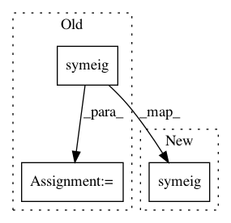

57fdba3172a50bc84da43ee884d6ca31cadd7a96,kfac.py,KFACOptimizer,step,#KFACOptimizer#,187
Before Change
// Experimenting with different ways to this in PyTorch.
self.d_a[m], self.Q_a[m] = torch.symeig(
self.m_aa[m].cpu().double(), eigenvectors=True)
self.d_g[m], self.Q_g[m] = torch.symeig(
self.m_gg[m].cpu().double(), eigenvectors=True)
self.d_a[m], self.Q_a[m] = self.d_a[m].float(), self.Q_a[m].float()
self.d_g[m], self.Q_g[m] = self.d_g[m].float(), self.Q_g[m].float()
if self.m_aa[m].is_cuda:
self.d_a[m], self.Q_a[m] = self.d_a[m].cuda(), self.Q_a[m].cuda()
After Change
// Experimenting with different ways to this in PyTorch.
self.d_a[m], self.Q_a[m] = torch.symeig(
self.m_aa[m].double(), eigenvectors=True)
self.d_g[m], self.Q_g[m] = torch.symeig(
self.m_gg[m].double(), eigenvectors=True)
self.d_a[m], self.Q_a[m] = self.d_a[m].float(), self.Q_a[m].float()
self.d_g[m], self.Q_g[m] = self.d_g[m].float(), self.Q_g[m].float()
self.d_a[m].mul_((self.d_a[m] > 1e-6).float())
In pattern: SUPERPATTERN
Frequency: 3
Non-data size: 3
Instances
Project Name: ikostrikov/pytorch-a2c-ppo-acktr
Commit Name: 57fdba3172a50bc84da43ee884d6ca31cadd7a96
Time: 2017-12-07
Author: kevin.huhy@gmail.com
File Name: kfac.py
Class Name: KFACOptimizer
Method Name: step
Project Name: cornellius-gp/gpytorch
Commit Name: fca285821740bcc013bfe27b5dd11b7fdb9b9812
Time: 2021-01-18
Author: balandat@fb.com
File Name: gpytorch/lazy/kronecker_product_added_diag_lazy_tensor.py
Class Name: KroneckerProductAddedDiagLazyTensor
Method Name: _solve
Project Name: ikostrikov/pytorch-a2c-ppo-acktr
Commit Name: 13ced66a5d6979047e1fbdd337b6f22a61efc8eb
Time: 2017-12-07
Author: ikostrikov@gmail.com
File Name: kfac.py
Class Name: KFACOptimizer
Method Name: step